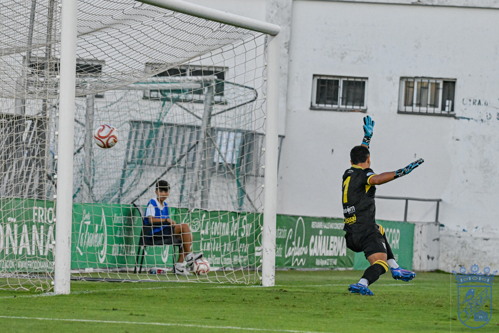
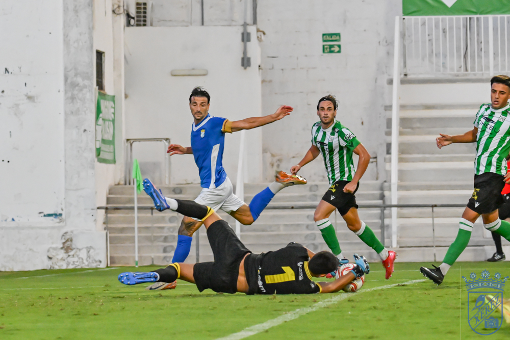

Xerez let victory slip in the 92nd minute when they should have wrapped it up earlier
 Xerez CD
Xerez CDZelu had put the blue-and-whites ahead before half-time, but a lapse at the back in stoppage time allowed Alfonso to make it 1-1
Julio Martínez makes a debut with promising touches, Víctor López gets his first summer minutes and Chuma is still unable to make his debut through injury
Xerez CD missed out on rounding off their pre-season farewell with a win. A goal in the last action of the match ruined a perfect finish for Xavi Molist's side, who had done more than enough to take the win against Atlético Sanluqueño. The blue-and-whites should have settled it in the first half against a powerless opponent, unable to create the slightest danger for much of the match, but the early lead given to them by Zelu vanished in the 92nd minute, when a defensive lapse allowed the hosts to equalise in a game in which the blue-and-whites created chances by the bucketload without managing to put it to bed. It was not a bad performance from the Deportivo, but the lack of finishing up front ended up proving costly, something that from next Saturday, with the league under way, will come at a cost in points.
The fixture also brought two pieces of individual news: Víctor López played his first minutes of the summer, while Chuma is still unable to return from injury. At the other end of the scale, Julio Martínez, the latest blue-and-white signing, made his first appearance and left a very positive impression as soon as he stepped onto the pitch.
A line-up with a league feel
Xavi Molist repeated, give or take a few details, what could be his line-up for the league opener away to Estepona. In fact, this eleven could well be, with some tweaks, the one that starts that official debut. Carlos Pantoja was in goal, while in defence there was a back four with Guille Campos and Chacartegui as full-backs and Manu Galán and Moisés as the centre-back pairing. In midfield, Raúl López and Isuskiza acted as the double pivot, with Mario Peregrina one step further forward. Zequi and Zelu played on the flanks, leaving Rubén Mesa as the focal point up front.
The start was calm, with an early yellow card for Moisés and some flashes from Peregrina, the most active player in that first quarter of an hour. Guille Campos tried to find Zequi with a long ball, but the former Sanluqueño player did not get his body shape right and the home centre-back, sharper in the duel, cleared the danger.
Zelu breaks the deadlock
Possession belonged to the blue-and-whites, although with little penetration and a tempo that suited an opponent — a direct rival this season in Group 4 of the Segunda Federación — who arrived bruised after a heavy home defeat the previous day against Betis Deportivo (0-3). Xerez's main source of joy came down the left flank, more through Chacartegui's runs than Zequi's contribution, although, paradoxically, the first goal stemmed from a Sanluqueño attack that the blue-and-white defence cleared to that same area: the ball fell to Chacartegui again, who put in a cross that Zelu, arriving from the opposite side, turned into the back of the net for 0-1.

Photo: Diario XerecistaXerez kept going. Raúl López crashed a volley after a cleared corner just inches wide of the goal defended by Fernando Valencia, and Rubén Mesa forced a good diving save from the home keeper with a long-range shot. The clearest warning of a 0-2 came ten minutes before the break: a diagonal ball from Moisés left Chacartegui completely alone — the most incisive of the blue-and-white attackers in the first half — but he wasted the one-on-one by opting to shoot with his weaker foot, and the effort went wide.
With Xerez still on top, another ball over the top from Raúl López for Zelu caused another scare in the opposition area: the Jerez-born player's cross was looking for Rubén Mesa, but a defender managed to intercept it at the last moment. In first-half stoppage time, it was Guille Campos who fired a warning with a long-range shot that went just past the right-hand post.
More chances after the break, but no reward
Molist changed the line-up at the restart, bringing on Josete, Fali and Marcos Alconchel for Moisés, Isuskiza and Pantoja. The new group came out with energy and within barely a minute had already created two chances: a shot from Zelu, after a lay-off from Rubén Mesa, that was blocked by a defender, and a golden chance for Zequi, who cut inside and sent his left-footed strike just past the post.

Photo: Diario XerecistaThe script stayed much the same: total dominance from Xerez CD, without finding a way to extend the lead. Another surging run from Chacartegui down the left led to a shot from Raúl López from the edge of the area that went just over the bar. Past the hour mark, the match had a tense moment when a clash between the home side's Otero and Xerez's Óscar Lorenzo caused a small scuffle; Ismael, who had leapt up from the bench, ended up being sent off by the referee.
Sanluqueño fired a warning in the closing stages with their first dangerous attack of the match: a good move down the right flank ended with a cross that Otero, completely unmarked, sent over the bar despite having everything in his favour. Shortly before, Julio Martínez had had two perfect chances to open his account for the blue-and-whites, leaving a very positive impression in the minutes he enjoyed on the pitch.
The final blow
The ending came when the result already seemed settled in Xerez CD's favour. Deep into stoppage time, a cross from the right flank was not cleared in the blue-and-white area, and the ball ended up at the feet of Alfonso, who made no mistake to seal the final 1-1. There was no time for anything else.
Match facts
Atlético Sanluqueño: Fernando Valencia; Morillo (Marcos Álvarez, 60'), Aceituno (Ritore, 71'), Guedes (Mena, 60'), Ismael (Gaby, 60'); Iván Serrano, Poce, Aarón, Fernando (Ismael Salguero, 60'), Hugo Moriano (Alfonso, 68') and Abel (Otero, 46').
Xerez CD: Carlos Pantoja (Marcos Alconchel, 46'); Chacartegui (Abel Moreno, 60'), Manu Galán, Moisés (Josete, 46'), Guille Campos (Víctor López, 71'); Raúl López (Jaime López, 60'), Mario Peregrina (Leo Marín, 71'), Isuskiza (Fali, 46'); Zelu (Óscar Lorenzo, 60'), Zequi (Julio Martínez, 60') and Rubén Mesa.
Goals: 0-1 (23') Zelu. 1-1 (92') Alfonso.
Referee: Rubén Cartes Burgos, of the Huelva committee. He showed a straight red card to the home side's Ismael (64') and also to the Sanluqueño goalkeeping coach. He booked home players Hugo Moriano and Ismael Salguero, and visiting players Moisés, Óscar Lorenzo, Fali and Víctor López.
Notes: Friendly match played at El Palmar in Sanlúcar, with the pitch in good condition and a notable turnout of Xerez supporters who travelled to the Sanluqueño ground.